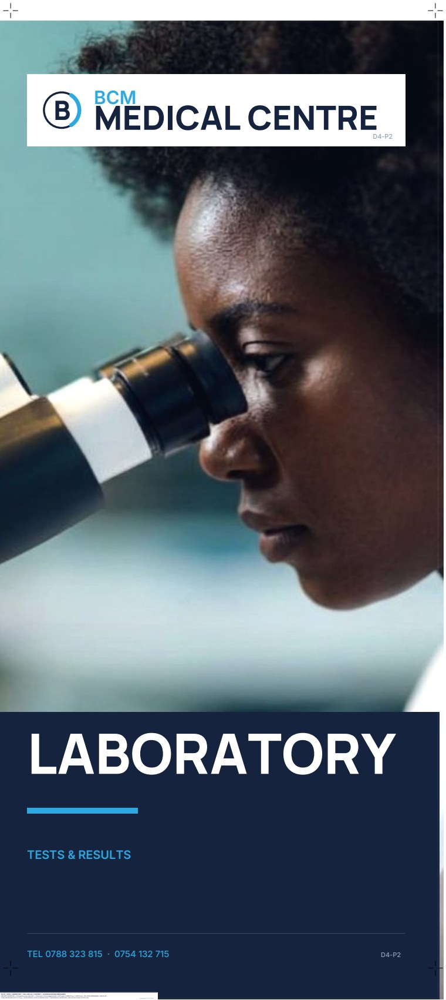
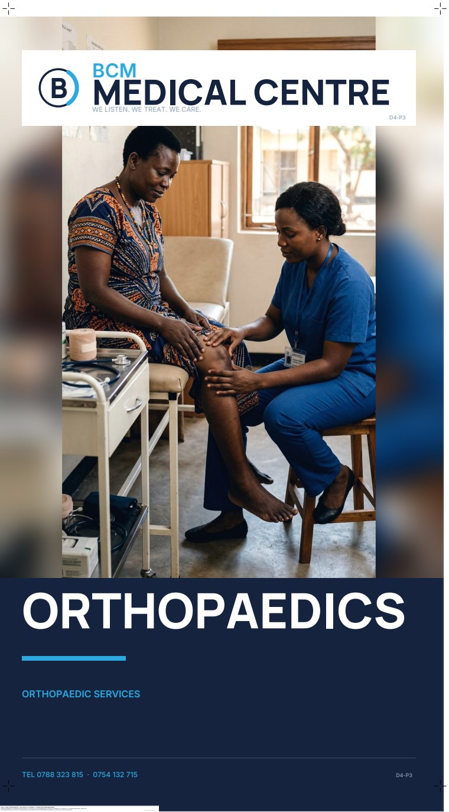
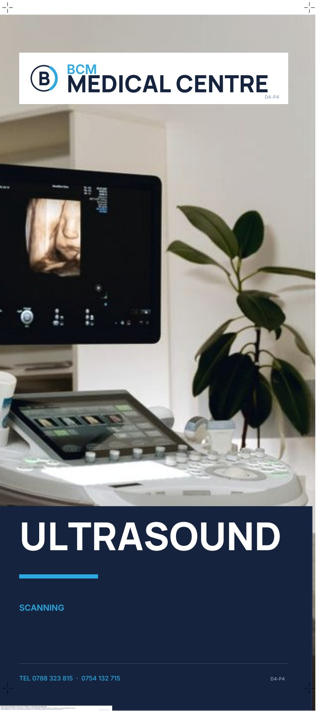
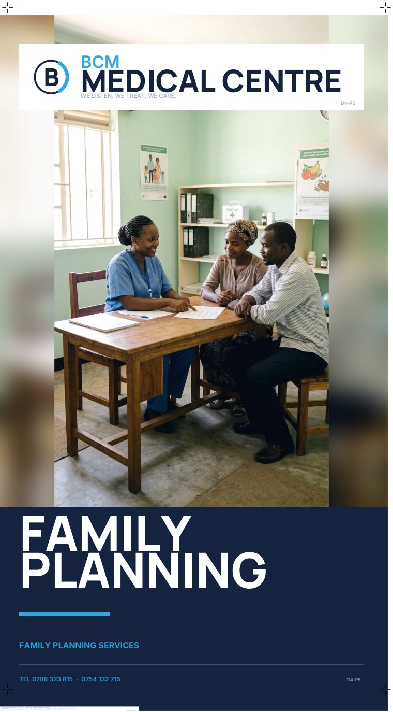
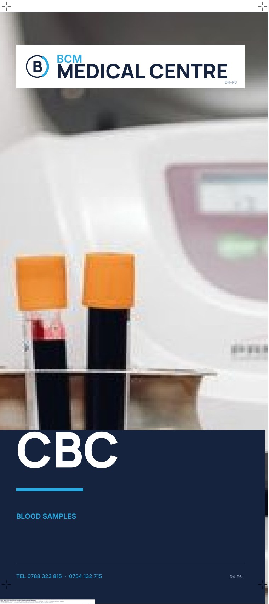
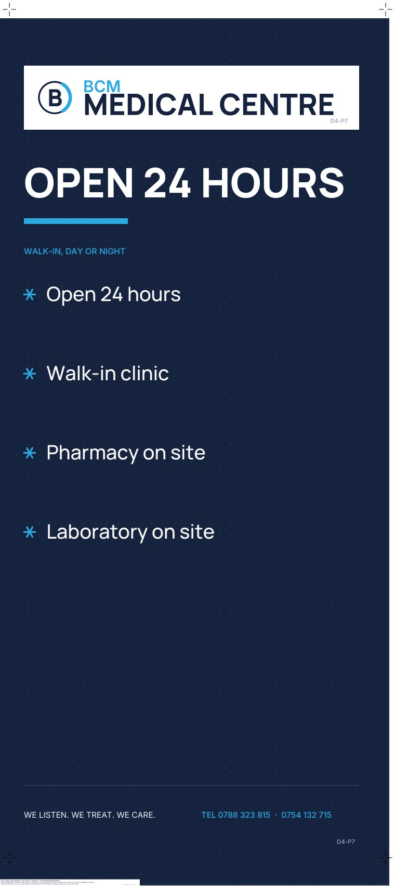
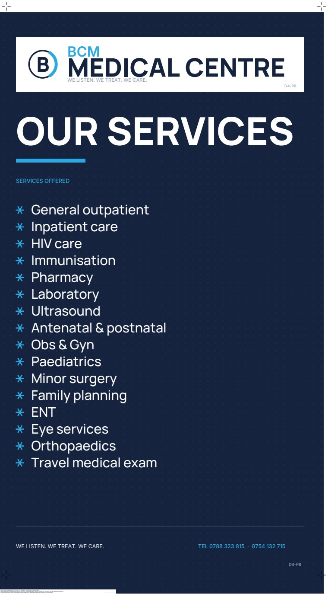

cottonbro studio

Mikhail Nilov

AI-generated

MART PRODUCTION

AI-generated

Karola G

No photograph

No photograph
A fourth doorway in the same measured scheme — the dispensary, the laboratory, orthopaedics, the blood bench and the scanning room, with one and family planning, plus a pane carrying 24-hour access lines. The orthopaedics and family planning scenes are AI-generated; other scenes are stock photographs.






